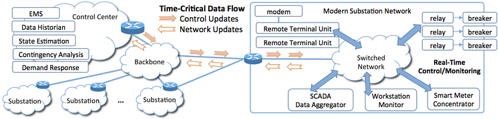
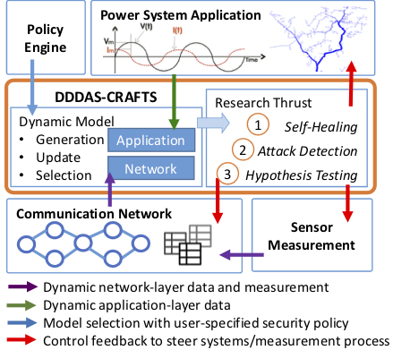

Industrial control systems (ICSes) perform vital functions in national critical infrastructures, such as electric power distribution; oil, gas, and water distribution; transportation systems; health-care device management; and even weapons systems. The disruption of these control systems could have a significant impact on public safety and health, and lead to large financial losses. However, modern ICSes are increasingly adopting Internet technology to boost control efficiency. Exposing such control systems to public networks increases the risk of attacks and failures inherited from the commodity network infrastructure.

This project aims to develop a DDDAS-based Cyber-Resilient and Attack-secure Framework for a Trustworthy industrial control Systems (DDDAS-CRAFTS) to secure and protect critical energy infrastructures. The core components of DDDAS-CRAFTS include the novel underlying Software-Defined Networking (SDN)-based communication infrastructure and multiple DDDAS-based security modules to enable a secure and resilient power system.
